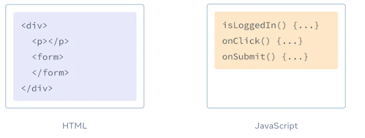
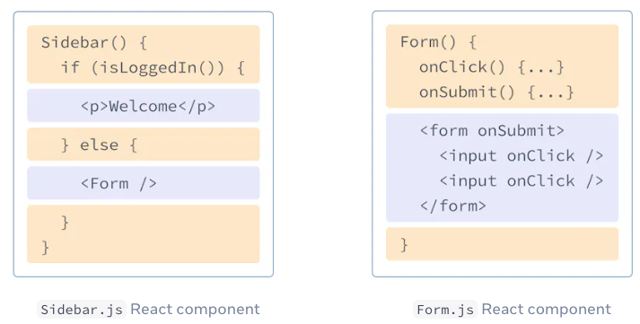

使用 JSX 书写标签语言¶
JSX 是 JavaScript 语法扩展，可以让你在 JavaScript 文件中书写类似 HTML 的标签。虽然还有其它方式可以编写组件，但大部分 React 开发者更喜欢 JSX 的简洁性，并且在大部分代码库中使用它。
你将学习到
- 为什么 React 将标签和渲染逻辑耦合在一起
- JSX 与 HTML 有什么区别
- 如何通过 JSX 展示信息
1. JSX: 将标签引入 JavaScript¶
网页是构建在 HTML、CSS 和 JavaScript 之上的。多年以来，web 开发者都是将网页内容存放在 HTML 中，样式放在 CSS 中，而逻辑则放在 JavaScript 中 —— 通常是在不同的文件中！页面的内容通过标签语言描述并存放在 HTML 文件中，而逻辑则单独存放在 JavaScript 文件中。

但随着 Web 的交互性越来越强，逻辑越来越决定页面中的内容。JavaScript 控制着 HTML 的内容！这也是为什么 在 React 中，渲染逻辑和标签共同存在于同一个地方——组件。

将一个按钮的渲染逻辑和标签放在一起可以确保它们在每次编辑时都能保持互相同步。反之，彼此无关的细节是互相隔离的，例如按钮的标签和侧边栏的标签。这样我们在修改其中任意一个组件时会更安全。
每个 React 组件都是一个 JavaScript 函数，它会返回一些标签，React 会将这些标签渲染到浏览器上。React 组件使用一种被称为 JSX 的语法扩展来描述这些标签。JSX 看起来和 HTML 很像，但它的语法更加严格并且可以动态展示信息。了解这些区别最好的方式就是将一些 HTML 标签转化为 JSX 标签。
注意
JSX and React 是相互独立的 东西。但它们经常一起使用，但你 可以 单独使用它们中的任意一个，JSX 是一种语法扩展，而 React 则是一个 JavaScript 的库。
2. 将 HTML 转化为 JSX¶
假设你现在有一些（完全有效的）HTML 标签：
而现在想要把这些标签直接迁移到组件中：
这是因为 JSX 语法更加严格并且相比 HTML 有更多的规则！上面的错误提示可以帮助你修复标签中的错误，当然也可以参考下面的指引。
大部分情况下，React 在屏幕上显示的错误提示就能帮你找到问题所在，如果在编写过程中遇到问题就参考一下提示吧。
2. JSX 规则¶
2.1 只能返回一个根元素¶
如果想要在一个组件中包含多个元素，需要用一个父标签把它们包裹起来。例如，你可以使用一个 <div> 标签：
如果你不想在标签中增加一个额外的 <div>，可以用 <> 和 `` 元素来代替：
这个空标签被称作 Fragment。React Fragment 允许你将子元素分组，而不会在 HTML 结构中添加额外节点。
2.2 标签必须闭合¶
JSX 要求标签必须正确闭合。像 <img> 这样的自闭合标签必须书写成 <img />，而像 <li>oranges 这样只有开始标签的元素必须带有闭合标签，需要改为 <li>oranges</li>。
海蒂·拉玛的照片和待办事项的标签经修改后变为：
2.3 使用驼峰式命名法给大部分属性命名¶
JSX 最终会被转化为 JavaScript，而 JSX 中的属性也会变成 JavaScript 对象中的键值对。在你自己的组件中，经常会遇到需要用变量的方式读取这些属性的时候。但 JavaScript 对变量的命名有限制。例如，变量名称不能包含 - 符号或者像 class 这样的保留字。
这就是为什么在 React 中，大部分 HTML 和 SVG 属性都用驼峰式命名法表示。例如，需要用 strokeWidth 代替 stroke-width。由于 class 是一个保留字，所以在 React 中需要用 className 来代替。这也是 DOM 属性中的命名:
你可以 在 React DOM 元素中找到所有对应的属性。如果你在编写属性时发生了错误，不用担心 —— React 会在 浏览器控制台 中打印一条可能的更正信息。
2.4 高级提示：使用 JSX 转化器¶
将现有的 HTML 中的所有属性转化 JSX 的格式是很繁琐的。我们建议使用 转化器 将 HTML 和 SVG 标签转化为 JSX。这种转化器在实践中非常有用。但我们依然有必要去了解这种转化过程中发生了什么，这样你就可以编写自己的 JSX 了。
这是最终的结果：
3. 摘要¶
现在你知道了为什么我们需要 JSX 以及如何在组件中使用它：
- 由于渲染逻辑和标签是紧密相关的，所以 React 将它们存放在一个组件中。
- JSX 类似 HTML，不过有一些区别。如果需要的话可以使用 转化器 将 HTML 转化为 JSX。
- 错误提示通常会指引你将标签修改为正确的格式。